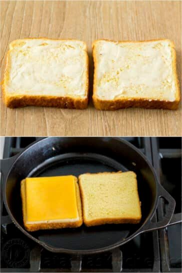
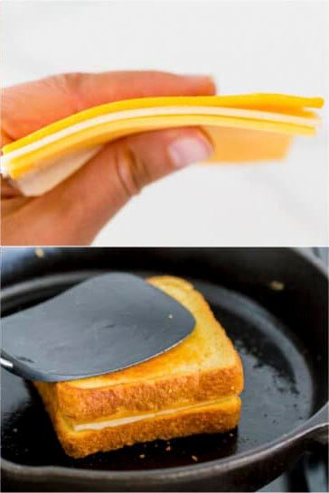

Here's how you make this delicious sandwich!

- Heat frying pan large enough for the two slices bread to medium heat. Add some butter to pan.
- Spread butter on outer side of two pieces bread, as shown in first image.
- Once butter is melted, add bread, buttered side down, as shown in second (lower) image.
- Add favored cheese slice, ie. sliced cheddar, american, provlone, swiss, or muenster, as shown in third (upper) image.
- You can also add a slice of your favorite deli meat, or pre-cooked bacon atop cheese. Optional.
- Let cheese soften, but keep an eye on the toastiness of the other side of bread. It can burn fast.
- When to desired toastiness level, flip bread slices to join as shown in last (lower) image.
- Remove from and turn off the stove.

And you'll have a delicious grilled cheese sandwich like the image below- Ta-Daaaa!!